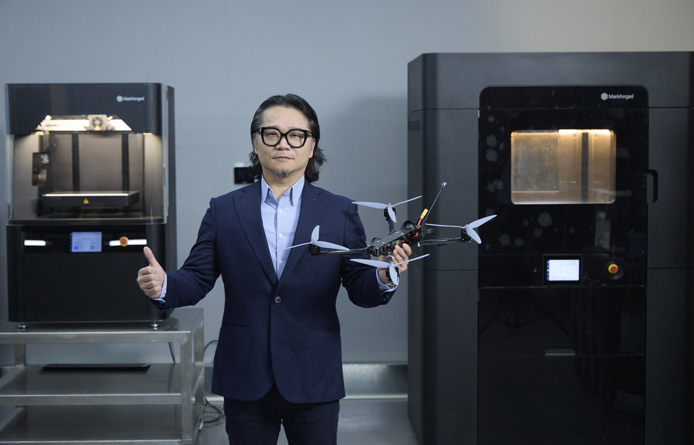

News & Insights

3D printed with continuous carbon fiber
ASTER-SWARM is a one-way attack FPV drone with an airframe built from five standardized modules. The prototype has completed takeoff and high-speed flight functional tests and passed a Beaufort Force 9 wind-resistance test (mean wind speed 20.8–24.4 m/s), verified by the National Chung-Shan Institute of Science and Technology (NCSIST). The airframe carries a special paint finish, applied mainly for low observability, and fitting propeller guards turns the same airframe into a training drone.
"An ordinary 3D-printed airframe shakes and cracks once it flies fast. With Markforged continuous carbon fiber printing, we could, for the first time, 3D print an airframe that truly holds up to high-speed flight. Add a modular design, and ASTER-SWARM can be revised, repaired and produced at scale entirely in Taiwan. That is exactly the capability self-reliant defense needs most."
Joe Tai, CEO, ASTER Technology Co., Ltd. (translated from the original Chinese)Challenge
Ordinary 3D-printed airframes can't survive high-speed flight
An FPV (first-person view) drone must hit full throttle, bank hard and dive within seconds. Airframes printed in common filaments such as PLA, ABS or PETG develop four kinds of structural problems under high-speed flight loads, each one degrading flight-control stability and mission success:
Arm flex: Arms without enough stiffness bend under hard acceleration and turns, pulling the motor axes out of line and costing thrust and attitude accuracy.
Structural resonance: High motor RPM excites frame resonance. The vibration noise reaches the gyro, causing PID oscillation and jittery FPV video.
Delamination: Interlayer bonding is the weakest point of an ordinary FDM part. Under sustained vibration and impact it cracks along the layer lines.
Fatigue and thermal creep: Near the motor mounts, constant heat and cyclic stress make plastic parts creep, loosening screws and cracking arms at the root.
The other route: CNC carbon-plate frames: Strong enough, but dependent on imported carbon-fiber sheet and outside machining. Every design change means new cutting and another lead time: too slow for prototype iteration, and a weak basis for a self-reliant supply chain.

Solution
Continuous fiber reinforcement along the load path
ASTER chose the Markforged X7 Field Edition. The X7 prints part geometry in Onyx™ (micro carbon fiber–filled nylon) and lays continuous carbon fiber along the load paths in selected layers, giving the arms and frame a stiffness and strength that ordinary 3D printing cannot reach.
Continuous carbon fiber reinforcement: Laid in high-stress zones such as arm roots and motor mounts. Continuous carbon fiber reaches 800 MPa tensile strength, about 2.6× that of 6061-T6 aluminum, at 1.4 g/cm³, roughly half the density of aluminum.
Built-in laser micrometer: An integrated laser micrometer handles adaptive bed leveling and pre-print calibration. With the Inspection feature (formerly Blacksmith, purchased separately) it also measures parts during printing.1 2
Field deployment: Ships in a ruggedized case and goes from case to printing in under 3 minutes, so parts can be made and replaced at a forward base.
Secure environments: A no-Wi-Fi hardware version and offline software are available. The operating system is STIG-compliant (U.S. DoD Security Technical Implementation Guide).
Modular
A modular airframe built to scale and resupply
ASTER-SWARM splits the airframe into five standardized modules, each printed and replaced independently on the X7. A damaged airframe needs only one part reprinted; a design revision touches only one module's file.
M1 Top plate: Protects the flight controller and electronics; swappable to suit the mission configuration.
M2 Base frame: X-shaped main frame; arms reinforced with continuous carbon fiber to carry high-speed flight loads.
M3 Standoffs: Standardized standoffs for fast assembly and disassembly of the upper and lower decks.
M4 Front guard: Camera guard, interchangeable to fit different camera modules.
M5 Payload interface: Standardized mounting interface, so one airframe can carry different mission modules.

Two roles
Mission drone and training drone
Fitting 3D-printed propeller guards to the same airframe turns it into a training drone. Operators train on the same airframe, with the same flight feel, as the mission drone, and parts damaged in training can be reprinted on site.
Fast iteration: Edit one module's CAD file and reprint. No new tooling, no outsourced machining.
Field repair: The X7 Field Edition deploys with the unit; damaged parts are reprinted and replaced at a forward base.
Scalable production: Standardized modules print in parallel on multiple printers to build the fleet sizes that mass deployment requires.
Results
From prototype to verification, made in Taiwan
High-speed flight validation: The prototype completed takeoff and high-speed flight functional tests. Its continuous carbon fiber–reinforced arms stayed stiff under high loads, without the flex and resonance typical of ordinary printed airframes.
Independent verification: A verification document for the Force 9 wind-resistance test was issued by a measurement and verification unit of the National Chung-Shan Institute of Science and Technology (NCSIST).
Local production: Airframe design, printing and assembly are all done in Taiwan, with no purchased carbon-plate frames and no outsourced machining.
Train as you fight: Training and mission drones share one airframe, so operators train on the real platform and parts worn out in training are reprinted on site.

"With 3D-printed drones, the question is not whether the airframe can be printed. It is whether the printed airframe survives high-speed flight. That depends on where the fiber goes: continuous carbon fiber laid along the load path gives the arms the stiffness to carry the load. The X7 Field Edition deploys with the unit, so a damaged airframe is reprinted at a forward base instead of waiting on outside machining."
Brian Chen, Country Manager, Greater China Region, Markforged
Equipment
X7 Field Edition field deployment specifications
Process: FFF + Continuous Filament Fabrication (CFF); build volume 330 × 270 × 200 mm; bed leveling, active print calibration; in-process inspection with Inspection (purchased separately).
Deployment: < 3 min to first print; case: Ruggedized, 86 kg packed · 914 × 914 × 762 mm; power 100–240 VAC, 150 W.
Materials: Plastics: Onyx, Onyx FR, Onyx ESD, Nylon White; Fibers: Carbon Fiber, Carbon Fiber FR, Fiberglass, Aramid Fiber (Kevlar®), HSHT Fiberglass.
Testing: Included in MIL-STD-810 testing conducted by the U.S. military. The operating system is STIG-compliant, and a no-Wi-Fi hardware version and optional offline software are available.
Full customer story (A4 · 6 pages)
The complete Markforged customer story: at a glance, challenge, solution, modular design, results, specifications and source notes.
Assess drone airframes and structural parts
Markforged engineers can assess fiber layout and printers against your airframe design, load paths and deployment conditions, and arrange a demonstration in Taiwan, Hong Kong or Vietnam.
Contact usSources
- Markforged X7 Field Edition product page
https://markforged.com/3d-printers/x7-field-edition - Markforged X7 Field Edition Product Specifications F-PR-3013 REV 1.0a (2021-11-11): laser, Blacksmith/Inspection as an additional purchase, continuous carbon fiber 800 MPa, build volume, case, power, materials, no-Wi-Fi version
- Markforged X7 Field Edition Brochure REV 1.5 (2022-02-16): case to printing in under 3 minutes, MIL-STD-810 testing, STIG
- Beaufort Force 9: mean wind speed 20.8–24.4 m/s, per the Beaufort scale of Taiwan's Central Weather Administration
- ASTER Technology website. ASTER-SWARM test results, module design and prototype photos provided by ASTER Technology; the exploded-view illustration is a Markforged image
https://www.aster-iot.com.tw/
Compiled by the Markforged Greater China & Vietnam team.
Back to the Media Hub · www.markforged.tw